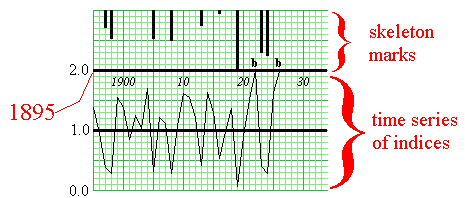

- Constructed from previously crossdated samples
- Is dated with calendar years, 1895 to 1926, in this case
- Often hundreds – if not thousands – of years long
- Time series of standardized growth indices
- Average of 1.0, normal growth
- Minimum of 0.0, below average to no growth
- Maximum of 2.0, above average to great growth
- Is marked as if it were a skeleton plot
- Small indices represented by long marks hanging down (e.g., 1919)
- Large indices represented by "b" marks (e.g., 1922 and 1926)
- Average indices represented by no marks
|
 |